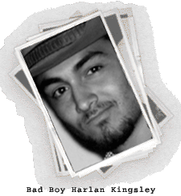
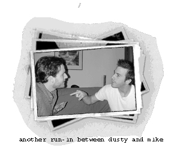
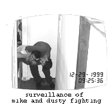

It's no secret in Tinseltown that producer John Milton and director Fred Rifkin do not get along. Their relationship has been a long, tenuous one. In my upcoming book Stabbed In The Back: The Real Sunrise Story, you will find the whole history of these two men well-documented.
The duo has had a number of run-ins over the years, but none matched the one on set of Stab 2. It seems that years of head-to-head combat culminated with a big blow-out on location at Columbia College. John Milton, who was running with Harlan Kingsley and bad-boy Michael Neithardt, known drug users, fell off the rehab wagon hard during the shoot.
Deep into drugs, he daily showed up to set late and almost immediately launched into rantings on Rifkin's directorial decisions. Fred tried to ban his long-time collaborator from location, but a certain star (read Tori Spelling) got involved and strong-armed Sunrise head Don Crosby into assuring that longtime Spelling family friend Milton be there at all times. This infuriated Rifkin as the producer continued his meddling ways. The director's relationship with some of the actors soured and the film's cast was split into two camps.
There was constant bickering between them. For instance, there was a covered-up scuffle between Rifkin supporter Dusty Penn and Milton cohort Neithardt. The set was deep rooted with venomous anger. Rifkin couldn't take it. He was ready to explode. When Milton told him how to cover a scene with Tori and Dusty (who were not getting along at the time because of the rift), Fred flipped out and physically went after the producer.
A set PA had to pull them apart. swore revenge and Crosby, having had enough, banned the producer from the set for the rest of the show. Needless to say, Tori was unhappy and joined other Milton supporters in making the rest of the shoot miserable for Rifkin. Tori, not wanting to rehash this incident, won't return for the third installment of Stab because of Milton and Rifkin's strained relationship.
More on the Rifkin and Milton later...